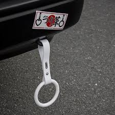
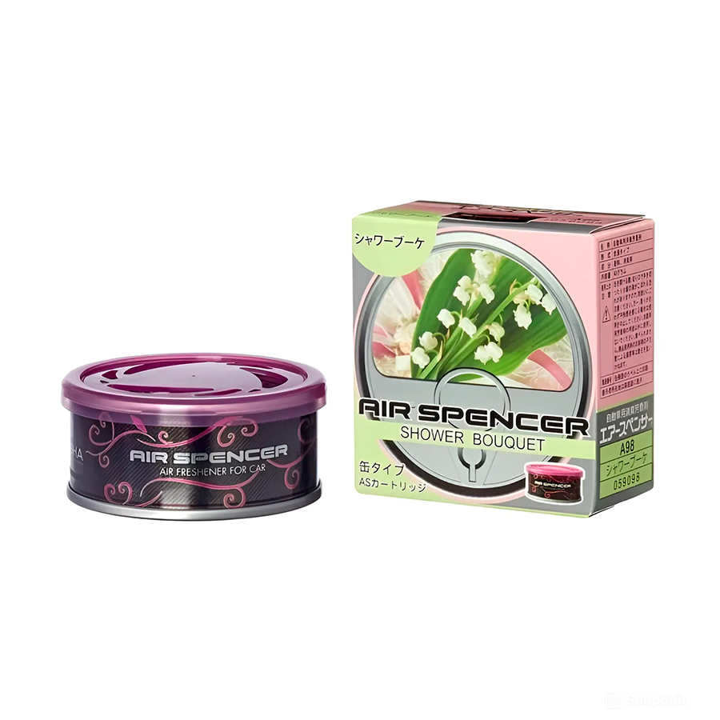
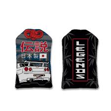
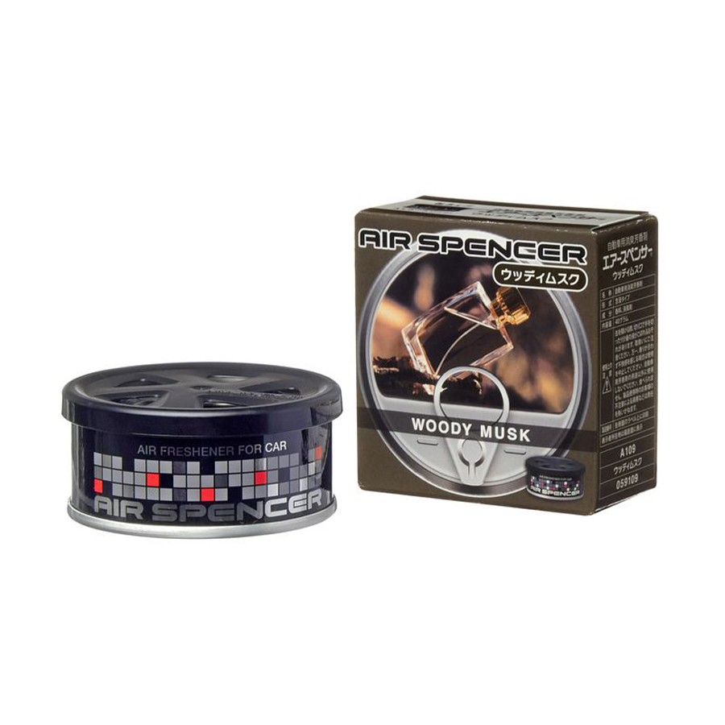
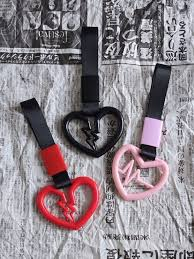
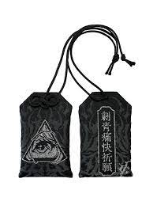

Аутентичные японские товары
Настоящие цурикавы, омамори и ароматизаторы из Японии

ツリカヴァ - Цурикава !
Цурикавы срывали с общественного транспорта в Японии и вешали на машины.
Они считаются традиционным оберегом для автолюбителей. Настоящие цурикавы
из Японии высоко ценятся коллекционерами по всему миру!

風味付け - Air Spender!
Легендарные японские ароматизаторы, известные своими уникальными запахами.
Каждый аромат передает неповторимую атмосферу японских улиц и пользуется
популярностью у автолюбителей по всему миру.

お守り - Omamori !
Редкие и ценные японские автомобильные талисманы. Эти традиционные обереги
приносят удачу и защищают водителя в пути. Особенно ценятся среди ценителей
японской культуры и автолюбителей.
Наши товары

Air Spender - lime/sakura
Освежающий аромат лайма и сакуры
3 500 ₽

Air Spender - chocolade
Теплый шоколадный аромат
3 500 ₽
Цурикава - стандартная
Классическая цурикава из Японии
13 000 ₽

Цурикава - сердце
Цурикава в форме сердца, редкий экземпляр
19 000 ₽
Omamori - grey
Серый омамори для защиты в пути
29 000 ₽

Omamori - black
Черный омамори, премиум качество
32 000 ₽